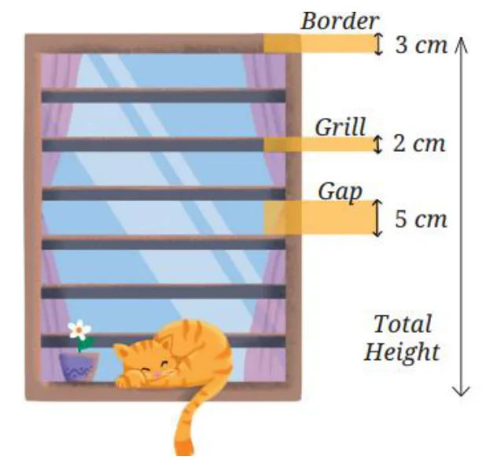
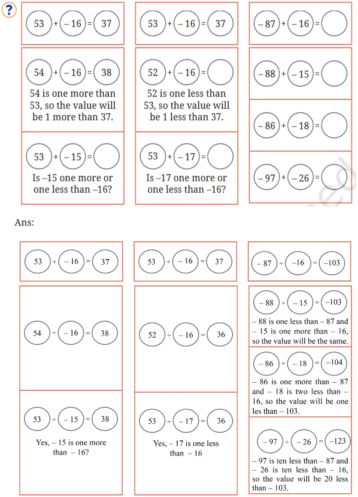

Page No. 34 – 35
Find the values of the following expressions by writing the terms in each case.
(a) \(28 - 7 + 8\)
(b) \(39 - 2 \times 6 + 11\)
(c) \(40 - 10 + 10 + 10\)
(d) \(48 - 10 \times 2 + 16 \div 2\)
(e) \(6 \times 3 - 4 \times 8 \times 5\)
Ans:
(a) \(28 - 7 + 8\)
Terms: 28, \(-7\), and 8 Value: 29
(b) \(39 - 2 \times 6 + 11\)
Terms: 39, \(-2 \times 6\) and 11 Value: 38
(c) \(40 - 10 + 10 + 10 = 40 + (-10) + 10 + 10\)
Terms: 40, \(-10\), 10 and 10 Value: 50
(d) \(48 - 10 \times 2 + 16 \div 2 = 48 + (-10 \times 2) + (16 \div 2)\)
Terms: 48, \(-10 \times 2\), \(16 \div 2\) Value: 36
(e) \(6 \times 3 - 4 \times 8 \times 5 = (6 \times 3) + (-4 \times 8 \times 5)\)
Terms: \(6 \times 3\), \(4 \times 8 \times 5\) Value: \(-142\)
Write a story/situation for each of the following expressions and find their values.
(a) \(89 + 21 - 10\)
(b) \(5 \times 12 - 6\)
(c) \(4 \times 9 + 2 \times 6\)
Ans:
(a) \(89 + 21 - 10\);
One of the stories could be;
A library had 89 books on its shelves. The librarian bought 21 new books and added them to the collection. Later, 10 books were borrowed by students. How many books remain on the shelves?
Value of the expression: 100
(b) \(5 \times 12 - 6\)
Make a story of your own for the given expression.
Value of the expression: 54
(c) \(4 \times 9 + 2 \times 6\)
Make a story of your own for the given expression.
Value of the expression: 48
For each of the following situations, write the expression describing the situation, identify its terms, and find the value of the expression.
(a) Queen Alia gave 100 gold coins to Princess Elsa and 100 gold coins to Princess Anna last year. Princess Elsa used the coins to start a business and doubled her coins. Princess Anna bought jewellery and has only half of the coins left. Write an expression describing how many gold coins Princess Elsa and Princess Anna together have.
(b) A metro train ticket between two stations is ₹40 for an adult and ₹20 for a child. What is the total cost of the tickets?
(i) for four adults and three children?
(ii) for two groups having three adults each?
(c) Find the total height of the window by writing an expression describing the relationship among the measurements shown in the picture.

Ans:
(a)
Expression describing the situation \(= 2 \times 100 + \frac{100}{2}\)
Terms: \(2 \times 100\), \(\frac{100}{2}\) Value: 250 gold coins.
(b)
(i) Expression \(= 4 \times 40 + 3 \times 20\)
Terms: \(4 \times 40\), \(3 \times 20\) Value: ₹220
(ii) Expression \(= 2 \times (3 \times 40)\).
Terms: \(2 \times (3 \times 40)\) Value: ₹240
(c)
Expression \(= 7 \times 5 + 6 \times 2 + 2 \times 3\)
Terms: \(7 \times 5\), \(6 \times 2\), \(2 \times 3\)
Total height: 53 cm
Page No. 37
Some expressions are given in the following three columns. In each column, one or more terms are changed from the first expression. Go through the example (in the first column) and fill in the blanks, doing as little computation as possible.
